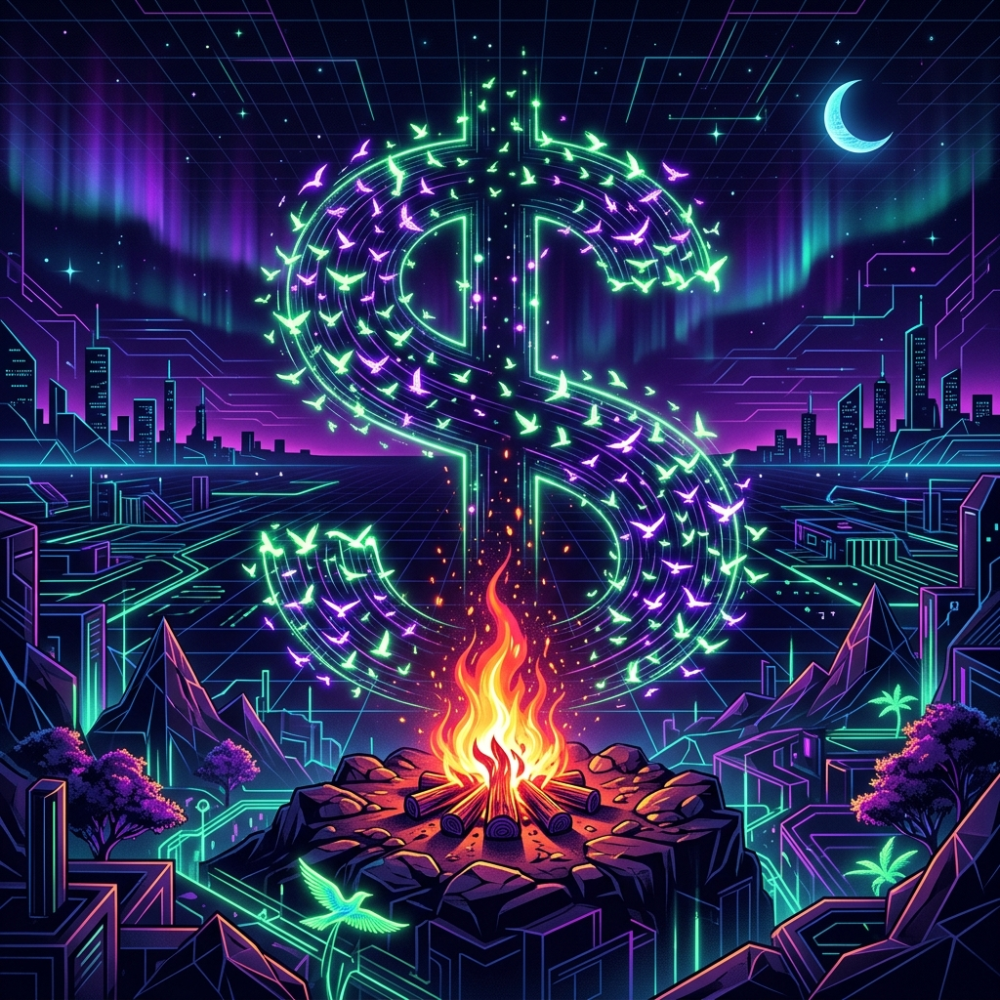

61 tools. 100% FOSS. Searchable, filterable, and ready to use.
Full RAG stack in one installer. LLM + Vector DB + Docs.
The gold standard for local model serving. One command to run any model.
Beautiful chat interface for local models with built-in RAG.
Modern chat framework focused on agent personas and UX.
Drop-in replacement for ChatGPT. Multi-model support.
Privacy-focused, local-first AI with a minimal interface.
Run LLMs on consumer CPUs. No GPU required.
Uncensored local AI focused on absolute neutrality.
Optimized for character-based agent personas locally.
Visual prompt orchestrator and all-in-one app platform.
Visual automation king. 400+ integrations with AI nodes.
Drag-and-drop nodes to build LangChain reasoning loops.
Visual UI specifically for building LangChain.js agents.
Node-based UI for complex image generation workflows.
The most feature-complete UI for local model testing.
Build internal dashboards with a visual low-code editor.
Rapidly build internal apps with built-in automation.
Platform to build custom internal tools and admin panels.
Agentic VS Code assistant. Sees files and runs terminal.
CLI pair programmer that writes and commits code directly.
Autonomous engineer that can solve GitHub issues.
Framework for orchestrating collaborative agent groups.
Microsoft's framework for multi-agent conversations.
Assigns software house roles to agents to build apps.
Simplified agent prioritizing and executing tasks.
Original autonomous agent for complex, multi-step goals.
Describe your app and let the agent scaffold the code.
Analytical powerhouse. SQLite for market data on a laptop.
Simple vector DB built for AI-native developers.
Production-ready vector DB with metadata filtering.
Search engine with built-in cross-modal vectorization.
Scalable vector database built for billion-scale workloads.
Turns any website into clean, LLM-ready markdown.
Processes PDFs and raw text into clean vector chunks.
Self-hosted, privacy-focused web search for agents.
Vision-based browser automation for legacy sites.
Lightning-fast search engine for instant search UX.
High-performance OLAP for massive market data sets.
In-memory data analytics platform for quants.
High-throughput library for serving LLMs in production.
Drop-in replacement for OpenAI API on your hardware.
Proxy simplifying calling 100+ LLMs with one format.
Aggregator for the Model Context Protocol ecosystem.
Multi-channel agent deployment (Discord/Telegram).
Uses knowledge graphs for deep reasoning in RAG.
Persistent memory layer for cross-session agent context.
Unified framework for scaling Python apps across clusters.
Parallel computing library for massive Pandas dataframes.
Programmatically author and monitor complex pipelines.
Programmatic prompt optimization. Logic over strings.
Evaluation framework for RAG faithfulness and precision.
Test agent behaviors against a suite of test cases.
Observability platform to trace and analyze AI cost.
Rust-native LLM framework for compiled AI applications.
Type-safe agent framework with strict validation.
Vectorized backtesting engine for hyper-speed quants.
Industrial algorithmic trading connected to IBKR.
Hedge fund DataFrame DB for versioned tick data.
Comprehensive TA indicators built on Pandas.
Low-level indicator library for RSI, EMA, and more.